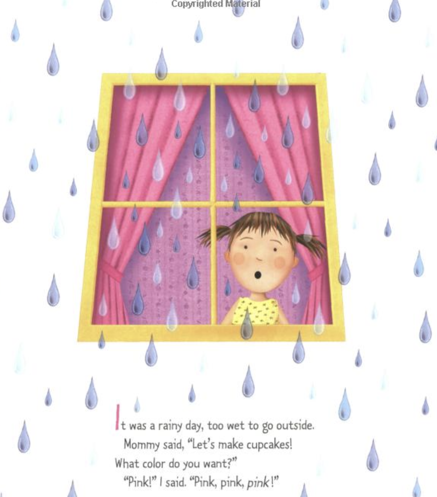
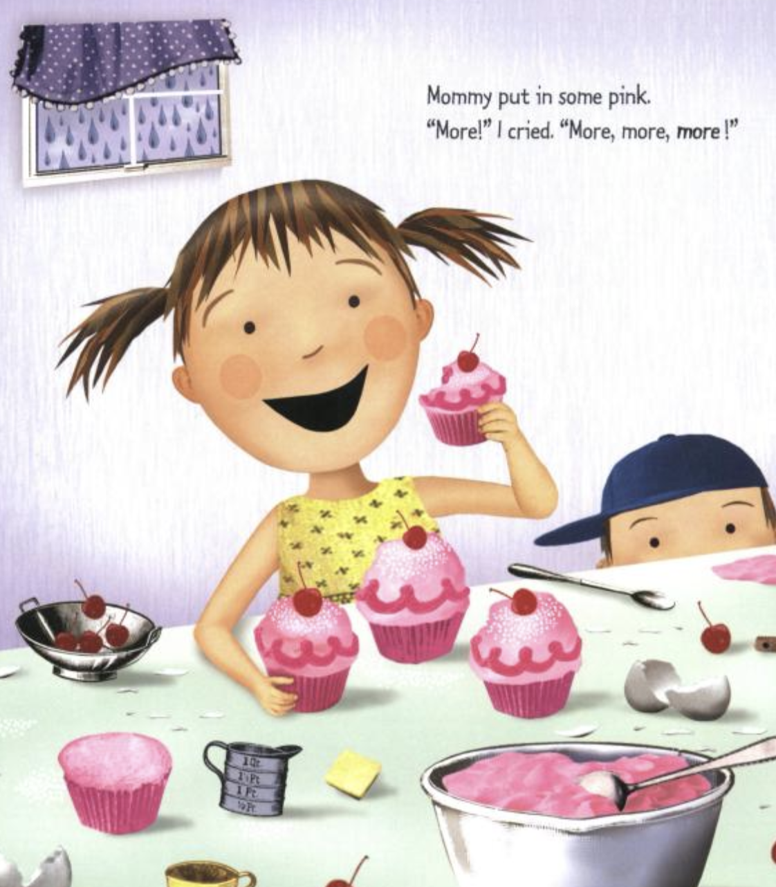
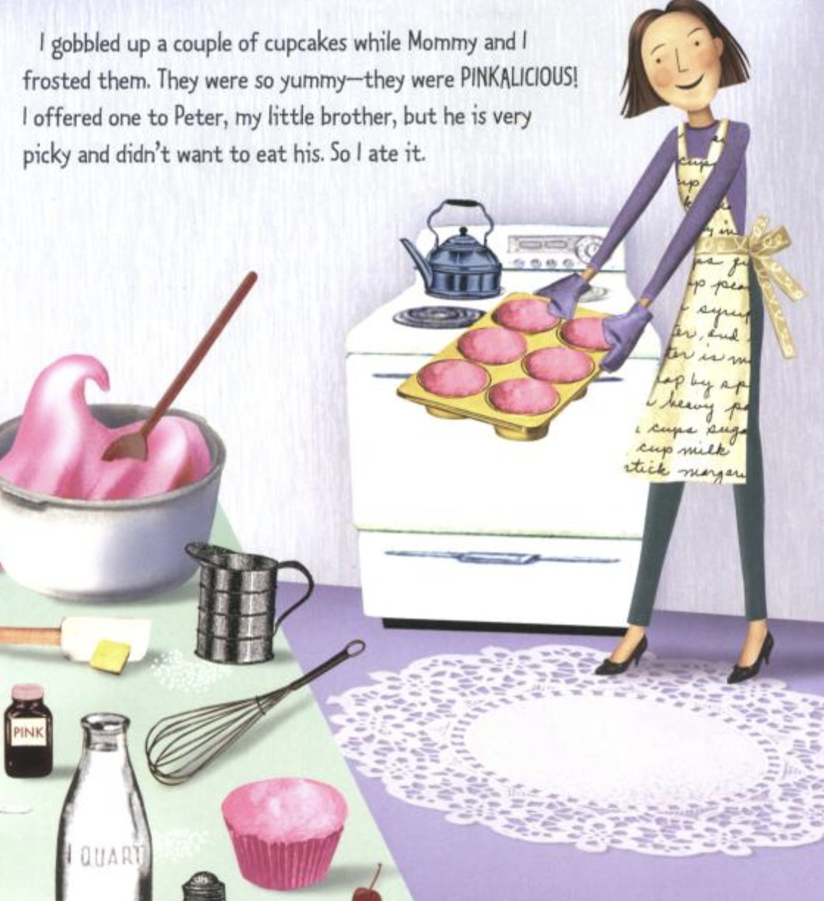
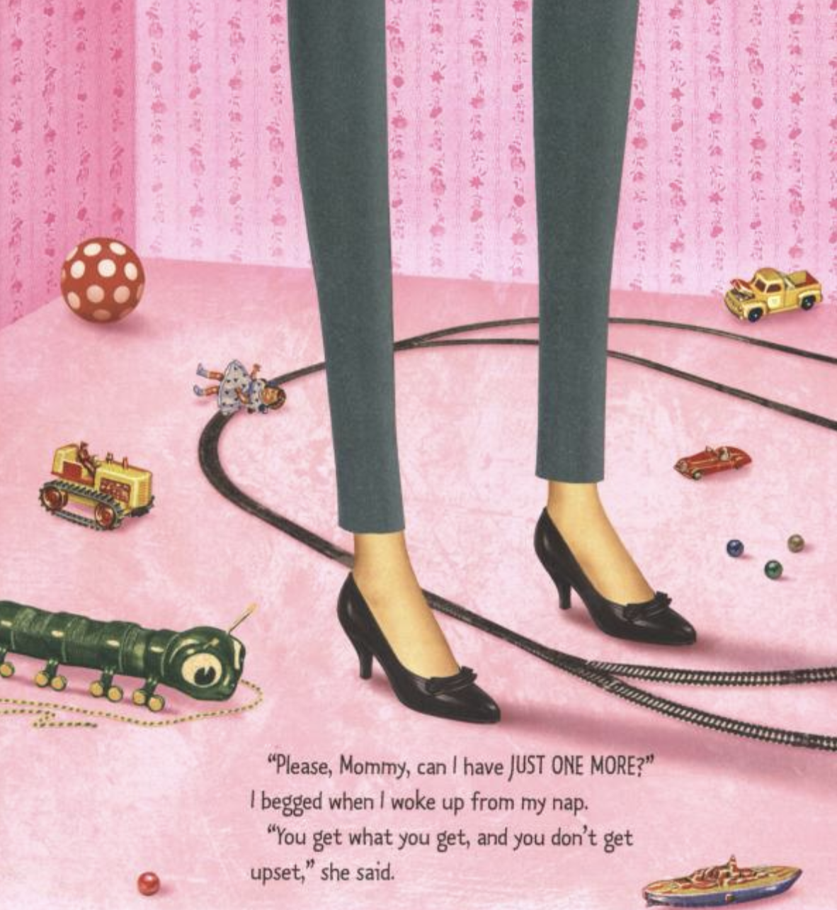

Congratulations!
Today is your day.
You're off to Great Places!
You're off and away!
You have brains in your head.
You have feet in your shoes.
You can steer yourself any direction you choose.
You're on your own. And you know what you know.
And YOU are the guy who'll decide where to go.
You'll look up and down streets.
Look 'em over with care.
About some you will say, "I don't choose to go there."
With your head full of brains and your shoes full of feet,
you're too smart to go down any not-so-good street.
And you may not find any
you'll want to go down.
In that case, of course,
you'll head straight out of town.
It's opener there
in the wide open air.
Out there things can happen
and frequently do
to people as brainy
and footsy as you.
And then things start to happen,
don't worry. Don't stew.
Just go right along.
You'll start happening too.
Day 3: Tuesday, January 21st, 2020




Day 4: Wednesday, January 23rd, 2020
This Teenage Life is a podcast about the ideas, stories, and unique perspectives of teenagers in the middle of their own growth as humans. The episodes that you’ll hear, and the people that you’ll meet, are meant to be related to, laughed at, and most of all offer a connection to whoever is listening.
For us, it's also a way to process what we feel and think. We all have our experiences. Sharing them with people we're comfortable with makes the world a little less big, and a little more loving.
Day 5: Thursday, January 24th, 2020
Snails!
“The life of a snail is as full of tasty food, comfortable beds of sorts, and a mix of pleasant and not-so-pleasant adventures as that of anyone I know”
― Elisabeth Tova Bailey, The Sound of a Wild Snail Eating
Day 6: Friday, January 25th, 2020
The Soul of An Octopus
“A lion is a mammal like us; an octopus is put together completely differently, with three hearts, a brain that wraps around its throat, and a covering of slime instead of hair. Even their blood is a different color from ours; it’s blue, because copper, not iron, carries its oxygen.”
― Sy Montgomery, The Soul of an Octopus: A Surprising Exploration into the Wonder of Consciousness
Some more thoughts...
Where the Sidewalk Ends
There is a place where the sidewalk ends
And before the street begins,
And there the grass grows soft and white,
And there the sun burns crimson bright,
And there the moon-bird rests from his flight
To cool in the peppermint wind.
Let us leave this place where the smoke blows black
And the dark street winds and bends.
Past the pits where the asphalt flowers grow
We shall walk with a walk that is measured and slow,
And watch where the chalk-white arrows go
To the place where the sidewalk ends.
Yes we'll walk with a walk that is measured and slow,
And we'll go where the chalk-white arrows go,
For the children, they mark, and the children, they know
The place where the sidewalk ends.